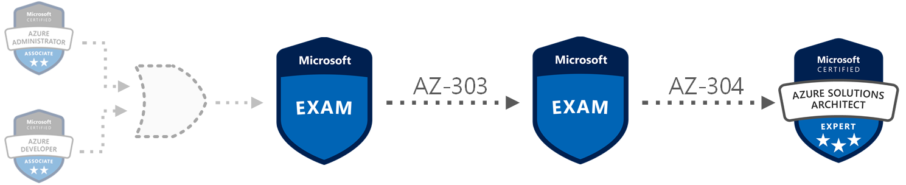
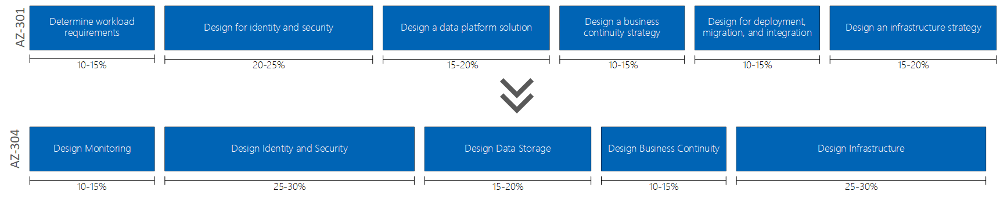

AZ-301 to AZ-304 Exam Changes
February 17, 2020
Estimated reading time: 12 minutes
Fourth one out in this little series about the 2020 Azure certification exam changes is the new AZ-304 exam that will be replacing the old AZ-301 exam.
The new Skills Measured document that currently are under development can be read at Microsoft’s Certification pages. A link to that document can be found here: Exam AZ-304: Microsoft Azure Architect Design - Skills Measured
This new exam has one less section than the old AZ-301. And as with all the other exams we have had a look at, this exam also has a better structure and focus on the areas that count for the role than the previous exam.
Some sections have been renamed and revamped, and some have been removed.
As a total I would say that this exam has changed as much, if not more, than the other exam changes.
The old section named Design for deployment, migration, and integration is gone.
And some of its content are spread around in the other sections, but a lot of the topics covered in this section are gone.
It might seem like cost optimization has received less relevance in this new exam. I am personally very interested in the cost aspect when designing a solution using Microsoft Azure. So I am a bit saddened by this.
There is also a wording change on this new exam.
From design to recommend.
So I would expect the phrasing of the questions and answers on the exam to be a bit different than before.
I find this change very fitting for a architect role, and since AZ-303 is more about designing and knowledge about the services itself, this new exam now has a more dedicated focus on recommendations.
The highlights of the changes from AZ-301 to AZ-304 are:
- Optimize consumption strategy is out
- Gather information and requirements is out
- IPSec authentication is out
- Azure Policy is in
- Azure Blueprint is in
- Conditional Access is in
- B2B integration is in
- Designing identity management is out
- Designing governance is in
- Managed Identities is in
- Azure KeyVault is in
- Azure Data Lake is in
- Azure Data Bricks is in
- Azure Synapse Analytics is in

Section 1: Design Monitoring (10-15%)
For us non-native english speakers, holistic might be a word that is a bit hard to understand, I have a hard time getting my head around it. So here is the Merriam-Webster definition of the word:
Relating to or concerned with wholes or with complete systems rather than with the analysis of, treatment of, or dissection into parts.
This is a new section that covers monitoring. It is noted specifically that this new section only covers all-up holistic monitoring strategies and not resource specific monitoring. Much of the resource specific monitoring topics have been moved to the new AZ-303 exam instead.
The old section Determine workload requirements had several sub-topics about cost monitoring, but in this new section this seems to have been downplayed a bit.
So I would expect less questions about cost monitoring in general than before.
There are also no longer a focus on gathering information and identifying requirements. These topics are mentioned as a word in a sentence in some of the new topics in the other sections, so I also expect this that there will be fewer questions about this on the new exam.
This new section now has a high focus on monitoring the cost of your solutions and monitoring (but, again, not resource-specific monitoring) and logging your azure solution in general.
So this is what I assume we will get the most questions about.
There are still the sub-topic Recommend solutions to minimize costs that basically replaces a entire topic Optimize consumption strategy from the old section.
So based on this I expect to se less questions about cost optimization, but more questions about cost monitoring.
- 1.1 Design for cost optimization
- Recommend a solution for cost management and cost reporting
- Recommend solutions to minimize costs
- 1.2 Design a solution for logging and monitoring
- Determine levels and storage locations for logs
- Plan for integration with monitoring tools including Azure Monitor and Azure Sentinel
- Recommend appropriate monitoring tool(s) for a solution
- Choose a mechanism for event routing and escalation
- Recommend a logging solution for compliance requirementsSection 2: Design Identity and Security (25-30%)
This section seems to renamed and based upon the old Design for identity and security section.
The relevance on the exam has increased by 5%.
Up from 20-25% to 25-30%.
This fits well with most of the new changes for these new exams.
Increased focus on security seems to be a common theme.
The topics about identity management, risk prevention for identity and monitoring have been removed. It looks like they have been replaced by two new topics regarding governance and security.
There are now a larger focus on authentication and authorization. Since this was 2/5ths of the section before and are 2/4ths now. I think this is a good change. But I am a bit sceptic about the removal of identity management. This is something I feel an architect should be able to design for a customer.
Azure Blueprint and Azure Policy have been added as sub-topics in this section. I find this a bit strange, but welcoming. I just love Azure Blueprints and Policies! But these was also covered in the new AZ-303 exam.
Azure KeyVault is also a new addition to this section. This is a great service, and being able to recommend solutions for your customers using this service is a great way of securing their credentials.
But all in all, a better structured section than before. And I expect more questions about authentication and authorization than before, and of course some questions about the new topics of governance and security.
- 2.1 Design authentication
- Recommend a solution for single-sign on
- Recommend a solution for authentication
- Recommend a solution for Conditional Access, including multi-factor authentication
- Recommend a solution for network access authentication
- Recommend a solution for a hybrid identity including Azure AD Connect and Azure AD Connect Health
- Recommend a solution for user self-service
- Recommend and implement a solution for B2B integration
- 2.2 Design authorization
- Choose an authorization approach
- Recommend a hierarchical structure that includes management groups, subscriptions and resource groups
- Recommend an access management solution including RBAC policies, access reviews, role assignments,
physical access, Privileged Identity Management (PIM), Azure AD Identity Protection, Just In Time (JIT) access
- 2.3 Design governance
- Recommend a strategy for tagging
- Recommend a solution for using Azure Policy
- Recommend a solution for using Azure Blueprint
- 2.4 Design security for applications
- Recommend a solution that includes KeyVault
- What can be stored in KeyVault
- KeyVault operations
- KeyVault regions
- Recommend a solution that includes Azure AD Managed Identities
- Recommend a solution for integrating applications into Azure ADSection 3: Design Data Storage (15-20%)
This section seems to be renamed from the old section Design a data platform solution.
The exam relevance is the same as before.
But this new section has some content changes compared to the old section.
This new section is highly focused on database services and recommending solutions regarding database services. (But not MariaDB, PostgreSQL and MySQL.) It is also highly focused on data integration, especially using Azure Data Factory with Data Flow. Azure Data Lake Storage and Data Bricks, Azure Synapse Analytics are also mentioned here now. This is a large increase in relevance on ADF and the services around this from before. So a expect a lot more questions on the exam regarding this.
Data protection seems to have been given less relevance now. In the previous exam this had its own topic, and now it is just a sub-topic.
So for this section of the exam I expect a lot more questions about recommendations around databases, ADF and its surrounding tools and azure storage accounts.
- 3.1 Design a solution for databases
- Select an appropriate data platform based on requirements
- Recommend database service tier sizing
- Recommend a solution for database scalability
- Recommend a solution for encrypting data at rest, data in transmission, and data in use
- 3.2 Design data integration
- Recommend a data flow to meet business requirements
- Recommend a solution for data integration, including Azure Data Factory, Azure Data Bricks,
Azure Data Lake, Azure Synapse Analytics
- 3.3 Select an appropriate storage account
- Choose between storage tiers
- Recommend a storage access solution
- Recommend storage management toolsSection 4: Design Business Continuity (10-15%)
This section is the one section in this new exam that is least different from the old exam.
It has received a slight rename from Design a business continuity strategy.
The content of this section seems at first glance to be about the same.
The topics and sub-topics have been rearranged some.
Some of the larger changes is that instead of having data archiving and recovery as separate topics, they are now combined into the new topic: Design a solution for backup and recovery.
This new name describes, in my opinion, the content way better than the previous two topics.
Regarding what type of questions one would get on the exam, based on the content of this section, I would guess that it would be around the same.
But note that also here there have been a wording change from design to recommend.
So expect the questions and also the answers to be phrased a bit differently than before.
- 4.1 Design a solution for backup and recovery
- Recommend a recovery solution for Azure hybrid and on-premises workloads that meets recovery
objectives (RTO, RLO, RPO)
- Design and Azure Site Recovery solution
- Recommend a site recovery replication policy
- Recommend a solution for site recovery capacity
- Recommend a solution for site failover and failback (planned/unplanned)
- Recommend a solution for the site recovery network
- Recommend a solution for recovery in different regions
- Recommend a solution for Azure Backup management
- Design a solution for data archiving and retention
- Recommend storage types and methodology for data archiving
- Identify business compliance requirements for data archiving
- Identify requirements for data archiving
- Identify SLA(s) for data archiving
- Recommend a data retention policy
- 4.2 Design for high availability
- Recommend a solution for application and workload redundancy, including compute, database, and storage
- Recommend a solution for autoscaling
- Identify resources that require high availability
- Identify storage types for high availability
- Recommend a solution for geo-redundancy of workloadsSection 5: Design Infrastructure (25-30%)
This new section is based heavily upon the old Design an infrastructure strategy section.
It has an 10% increased relevance on the exam.
Up from 15-20% to 25-30%.
The topics covered in this sections are very similar to the ones on the old section, but there are some notable differences.
Some topics that have been removed are the topics about storage strategy, monitoring and alerts. These topics was maybe a bit misplaced in the old exam, and in this new exam they are placed in their own respective sections instead. But it seems like alerting is gone in this new exam.
The new topic Design an application architecture covers mostly microservices architecture on top of services like Event Grid, Event Hubs, Service Bus, Storage Queues, Logic Apps and Azure Functions.
Together with the existing Design a compute solution topic it may look like this new section (and the exam itself) has an increased focus on microservices architectures and compute services.
So I would expect a lot more questions on the exam regarding this.
Also since these two topics have sub-topics about container solutions I would expect questions about recommending such services on the exam as well.
A new section about migrations have been added. This contains some of the migrations topics from the old Design for deployment, migration, and integration section that has been removed on the exam.
This focuses on migrating on-prem resources, VM’s and databases.
The old topic Design a networking strategy has been renamed to Design a network solution and now also contains sub-topics about network addressing, load balancing and security.
This topic is a lot larger than the one it replaces.
So I would expect more networking related questions on the exam.
All in all I think this section is a great improvement. I expect there to be more infrastructure related questions on the new exam. Especially regarding Serverless, Container, Networking and services that fits in a microservices architecture.
- 5.1 Design a compute solution
- Recommend a solution for compute provisioning
- Determine appropriate compute technologies, including virtual machines, App Services,
Service Fabric, Azure Functions, Windows Virtual Desktop, and containers
- Recommend a solution for containers
- AKS versus ACI and the configuration of each one
- Recommend a solution for automating compute management
- 5.2 Design a network solution
- Recommend a solution for network addressing and name resolution
- Recommend a solution for network provisioning
- Recommend a solution for network security
- Private endpoints
- Firewalls
- Gateways
- Etc.
- Recommend a solution for network connectivity to the Internet, on-premises networks,
and other Azure virtual networks
- Recommend a solution for automating network management
- Recommend a solution for load balancing and traffic routing
- 5.3 Design an application architecture
- Recommend a microservices architecture including Event Grid, Event Hubs, Service Bus,
Storage Queues, Logic Apps, Azure Functions, and webhooks
- Recommend an orchestration solution for deployment of applications including ARM templates,
Logic Apps, or Azure Functions
- Select an automation method
- Choose which resources or lifecycle steps will be automated
- Design integration with other sources such as an ITSM solution
- Recommend a solution for monitoring automation
- Recommend a solution for API integration
- Resign an API gateway strategy
- Determine policies for internal and external consumption of APIs
- Recommend a hosting structure for API management
- Recommend when and how to use API Keys
- 5.4 Design migrations
- Assess and interpret on-premises servers, data, and applications for migration
- Recommend a solution for migrating applications and VMs
- Recommend a solution for migration of databases
- Determine migration scope, including redundant, related, trivial, and outdated data